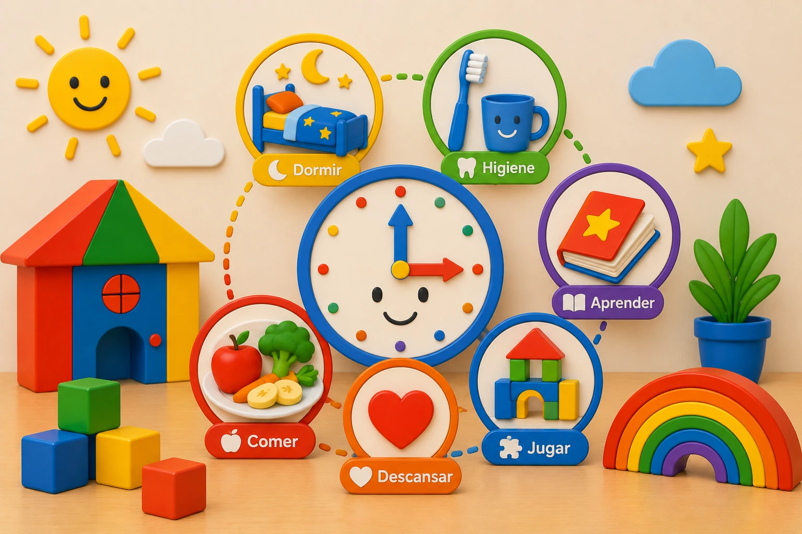

Rutinas Saludables para Niños Pequeños
Las rutinas ayudan a los niños a comprender el mundo que los rodea. Saber qué ocurrirá durante el día les brinda seguridad, reduce el estrés y favorece el desarrollo de hábitos positivos que pueden acompañarlos durante toda la vida.

1. Mantén horarios consistentes
Intentar que los niños despierten, coman y duerman a horas similares cada día ayuda a regular sus ritmos biológicos y facilita la adaptación a las actividades diarias.
2. Establece una rutina para dormir
Leer un cuento, apagar pantallas y crear un ambiente tranquilo antes de dormir puede mejorar significativamente la calidad del descanso.
3. Incluye tiempo para el juego
El juego es una parte esencial del aprendizaje infantil. Permite que los niños desarrollen creatividad, habilidades sociales y capacidad para resolver problemas.
4. Promueve hábitos de alimentación saludables
Compartir horarios regulares para las comidas y ofrecer alimentos variados ayuda a crear una relación positiva con la alimentación.
5. Fomenta la independencia
Actividades simples como guardar juguetes, lavarse las manos o ayudar a recoger materiales fortalecen la confianza y la autonomía.
6. Equilibra actividad y descanso
Los niños necesitan momentos para explorar y moverse, pero también espacios tranquilos para relajarse y recuperar energía.
Reflexión Final
Las rutinas no tienen que ser rígidas para ser efectivas. Lo importante es ofrecer una estructura predecible que permita a los niños sentirse seguros mientras desarrollan hábitos saludables y habilidades importantes para su crecimiento.
¿Buscas un ambiente estructurado y amoroso para tu hijo?
En Koinonia Fun Childcare ayudamos a los niños a desarrollar hábitos positivos mediante rutinas equilibradas, aprendizaje y actividades apropiadas para cada etapa.